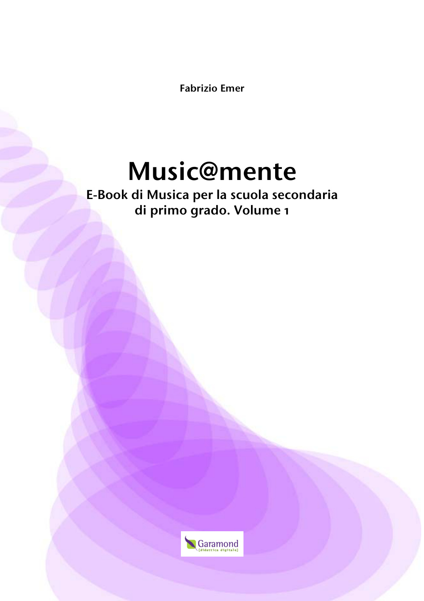

Le aree evidenziate corrispondono alle icone multimediali originali: fai clic per ascoltare o vedere.
Seleziona un esempio audio
Edizione locale · funziona senza connessione Internet. Per l'audio usa i controlli del lettore.

Edizione locale · funziona senza connessione Internet. Per l'audio usa i controlli del lettore.